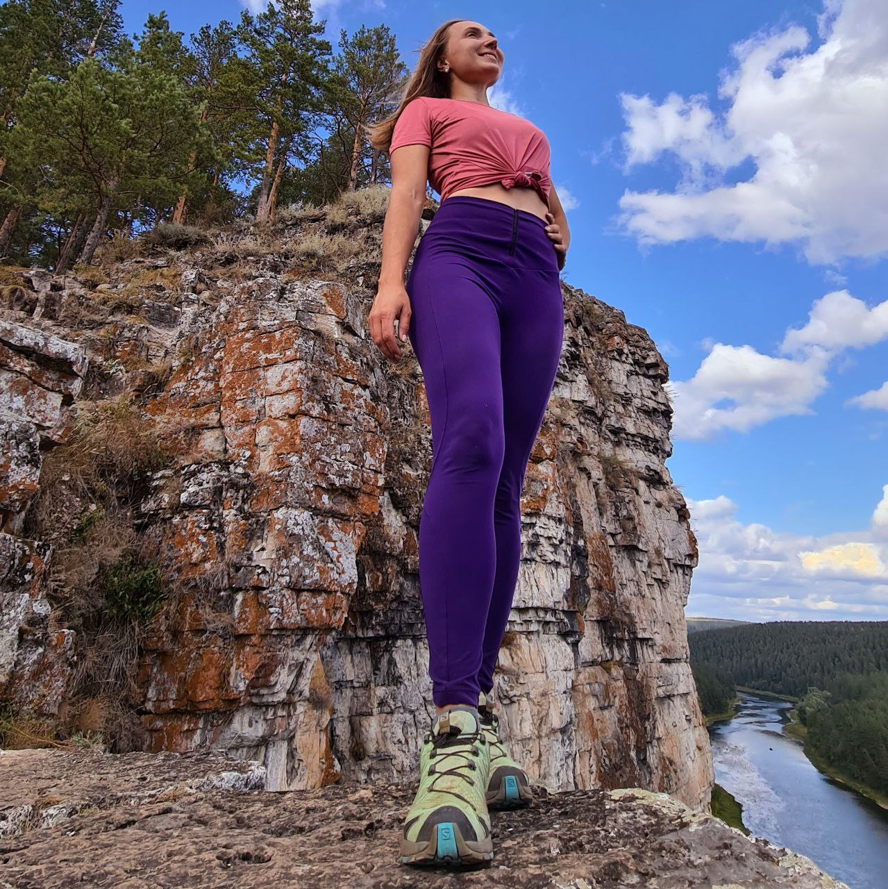

Привет! Давай знакомиться!
Я - Катя, один из организаторов путешествий с Урал-Батей
Если ты думаешь, что Урал - это скучно, то я покажу тебе насколько он прекрасен!
Нашим Уралом можно любоваться:
- с высоты, поднявшись на гору высотой более 1500 метров.
- под землей, спустившись в пещеру, или блуждая по забошенным шахтам.
- с воды, сплавляясь по одной из наших рек.
А теперь я хочу поделиться с тобой тройкой мест, которые обязательно нужно посетить на Урале.
ТОП-3 локации Урала:
- Национальный парк "Таганай"
- Айские притесы и пещерный город Сикияз
- Природный парк "Оленьи ручьи